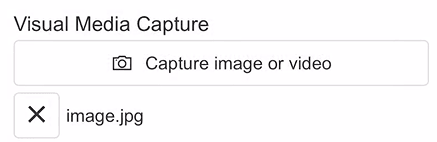
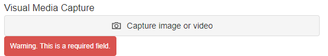
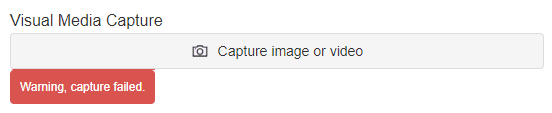

Visual Media Capture
The Visual Media Capture Block enables users to capture a photo or a video or upload an existing media file. This is useful when composing Applications such as a mobile inspection app and the user may be required to include an image when logging an issue.

Visual Media Capture Properties
Appearance
Common Properties
The visibility property is common to most Blocks;
See the Common Properties article for more details on common appearance properties.
Capture Button Text
The text displayed on the capture button.
Behavior
Common Properties
The disabled property is common to most Blocks;
See the Common Properties article for more details on common behavior properties.
Allowed File Extensions
This allows you to specify the types of files that can be uploaded. If left blank, any file type can be uploaded.
If a file extension is listed, (for example, a .png file), the Visual Media Capture will not allow you to upload any other file except those with a .png extension.
Max File Size
This setting dictates the maximum allowable file size for uploads. If you attempt to upload a file that exceeds the maximum size, it will not be uploaded.
Provider
The supported external cloud storage providers are Azure Blob or Amazon S3.
Use Variables
Tick to use variables for the provider-related properties.
Blob Connection String
The blob connection string (applies to the Azure Blob Provider only).
Blob Container Name
The blob container name (applies to the Azure Blob Provider only).
Access Key
The Amazon S3 access key (applies to the Amazon S3 Provider only).
Secret Key
The Amazon S3 secret key (applies to the Amazon S3 Provider only).
Bucket Name
The Amazon S3 bucket name (applies to the Amazon S3 Provider only).
Region
The Amazon S3 region (applies to the Amazon S3 Provider only).
Value
Common Properties
The value property is common to most Blocks;
See the Common Properties article for more details on common value properties.
We recommend using a dynamic value property so that when you upload media files, the URLs are bound to the value property, with enclosed brackets and comma-separated.
You can utilize a stored proc to save the file URLs into a data source and view them by adding the URL as a hyperlink to a Data Grid.
-- Sample code to populate the file URLs to a SQL table
CREATE PROCEDURE [dbo].[sp_MobileSpec_Update]
(
@MobileId BIGINT,
@MediaArray NVARCHAR(MAX),
@UploadDate DATETIME2(7),
@UploadUser NVARCHAR(150)
)
AS
BEGIN
SET NOCOUNT ON
IF (@MediaArray IS NOT NULL AND @MediaArray != '')
BEGIN
DECLARE @IDs TABLE (ID NVARCHAR(MAX)) -- Use NVARCHAR(MAX) to store URLs
-- Populate @IDs table with the result of dbo.SplitString function
INSERT INTO @IDs (ID)
SELECT Value FROM dbo.SplitString(@MediaArray, ',')
-- Iterate over each URL and insert into the table
DECLARE @ID NVARCHAR(MAX)
DECLARE cur CURSOR FOR
SELECT ID FROM @IDs
OPEN cur
FETCH NEXT FROM cur INTO @ID
WHILE @@FETCH_STATUS = 0
BEGIN
DECLARE @LastSlashPosition INT = LEN(@ID) - CHARINDEX('/', REVERSE(@ID)) + 1
DECLARE @FileName NVARCHAR(MAX) = SUBSTRING(@ID, @LastSlashPosition + 1, LEN(@ID) - @LastSlashPosition)
SET @FileName = SUBSTRING(@FileName, CHARINDEX('/', @FileName) + 1, LEN(@FileName))
-- Process each URL here
INSERT INTO [MobileInspectionApp_AppFile] ([MobileInspectionAppId], [AppFileId], [UploadDate], [UploadUser], [URL])
VALUES (@MobileId, @FileName, @UploadDate, @UploadUser, @ID)
FETCH NEXT FROM cur INTO @ID
END
CLOSE cur
DEALLOCATE cur
UPDATE [MobileInspectionAppTest] SET [AppFileId] = 'Files attached' WHERE [Id] = @MobileId
END
END
Validation
Common Properties
The Validation Group and Required properties are common to most Blocks;
See the Common Properties article for more details on common validation properties.
Required Message
The text of the error message that is displayed to the user when no media file has been captured or uploaded.

Capture Failed Message
The text of the error message that is displayed to the user if the media capture fails for any reason.

Last modified: August 03, 2025